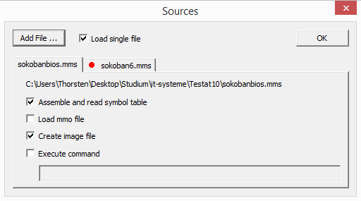

You reach the MMIX sources options through the Options menu.
In a typical MMIX setting, the complete MMIX program is contained in a single source file. If this box is checked, the check boxes below will be set automatically in such a way, that only one source file will be assembled and loaded. If this box is unchecked you are free to assemble and load as many files you want (even none at all). You should then know what you do. Note that programs are loaded into memory using the XOR operation.
Pressing the Add File button will allow you to browse your disk and add files to the editor.
For each file open in the editor, the tab contoll below will contain one page. Files that are loaded when the debugger starts are marked by a red dot next to the file name.
The first entry on each page shows the full file name,
If this box is checked, the source file will be assembled and its symbols will be read into the symbol table.
If this box is checked, the obejct file produced by the assembler will be loaded into memory. Only one object file can be loaded into memory at once.
Checking this box while the 'Load single file' is checked will cause the same check box for all other files to be unchecked.
If this box is checked an image file is created. This is used for assembling and running your own BIOS file.
If this box is checked, the following edit box is enabled. You can type any command here. The command will be executed after the source file has been assembled. You man define here some postprocessing.